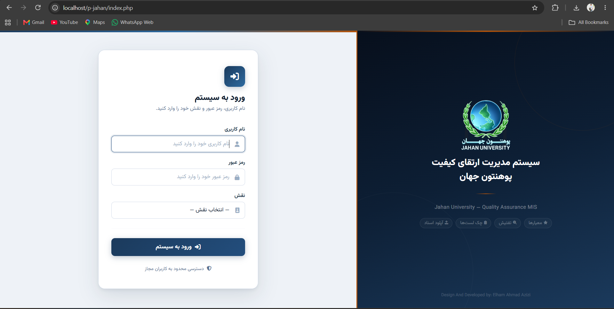
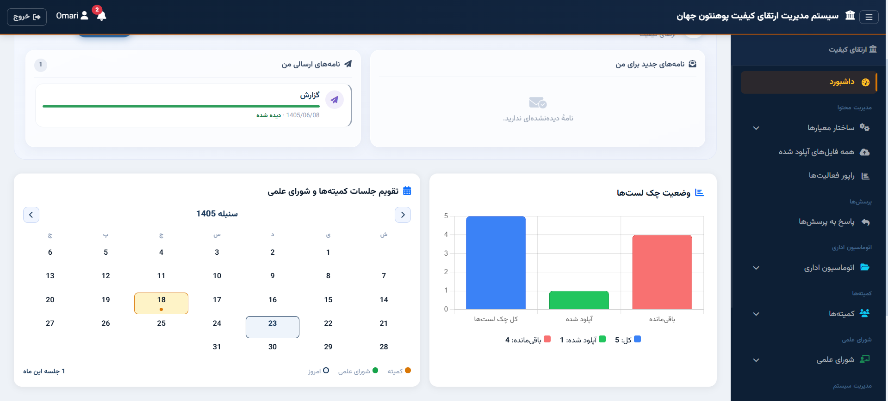
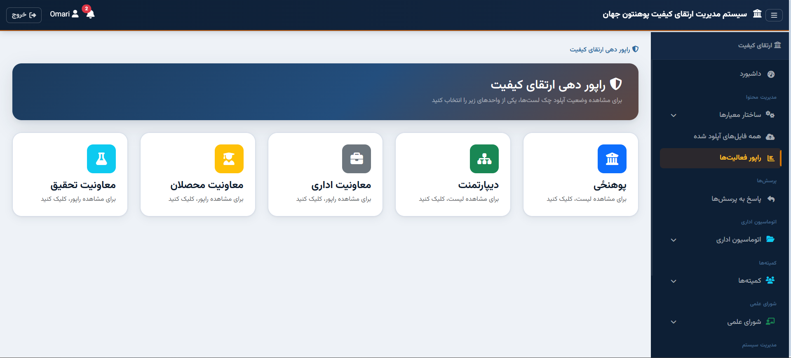
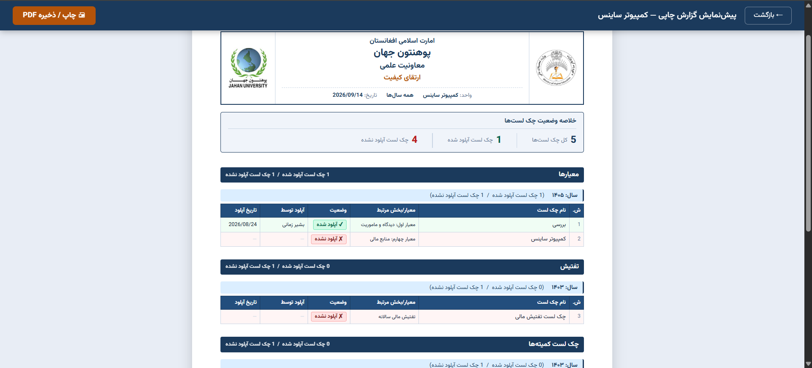

Project Overview
The Quality Assurance system provides Jahan University with a centralized platform to track academic performance, faculty evaluations, and institutional compliance with higher education standards.
Key Features
- Performance Benchmarking
- Automated Evaluation Cycles
- Real-time Data Visualization
- Document Management
Technologies
Html
CSS
Bootstrap 5
JS
Chart.js
Php